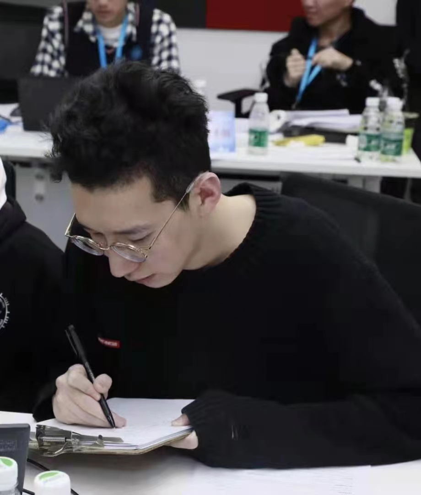
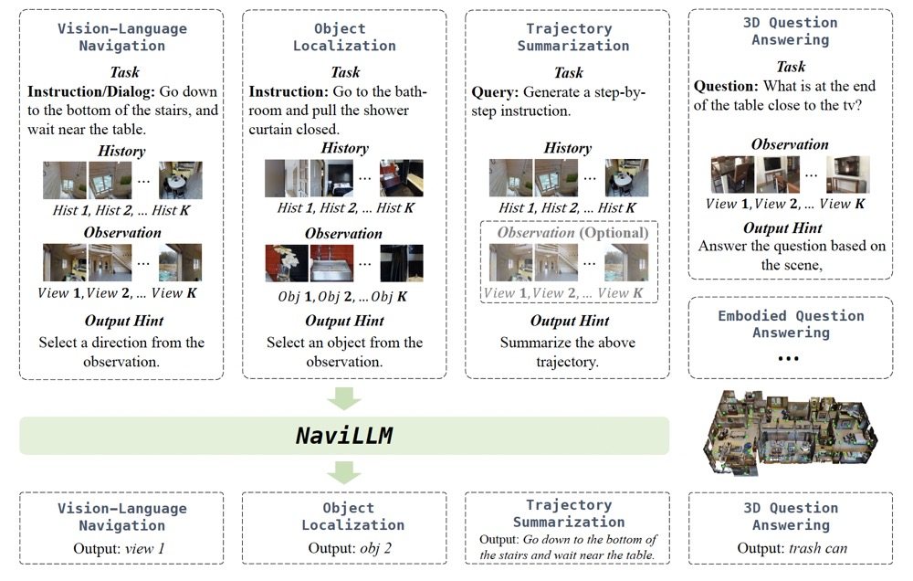
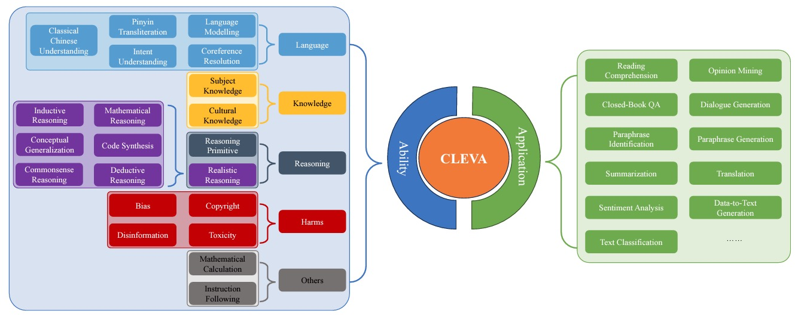
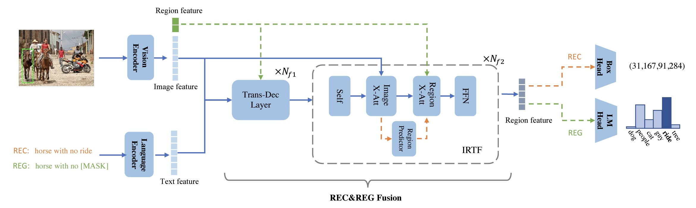
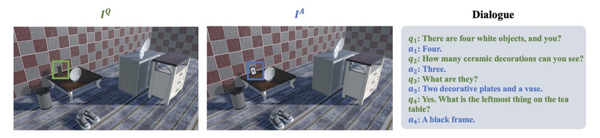
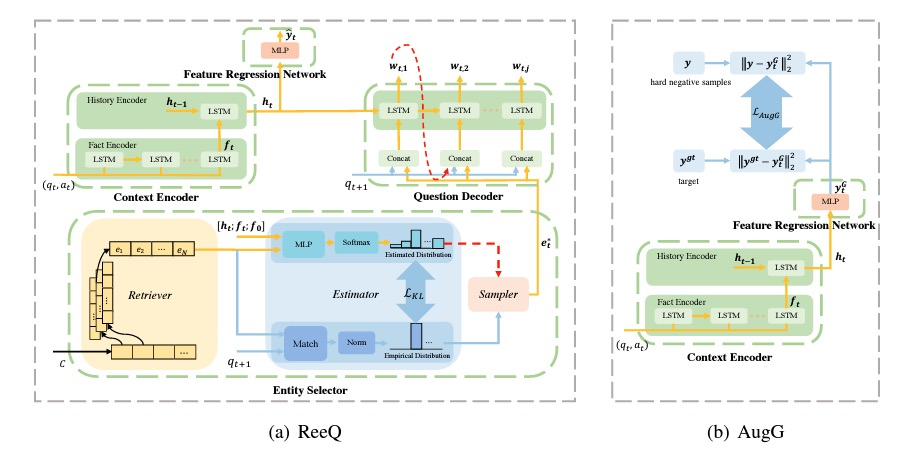

|
Duo Zheng (郑铎)
I am a first-year Ph.D. student at LaVi Lab, The Chinese University of Hong Kong. I am
fortunate to be advised by Prof. Liwei Wang. Before that,
I received B.Eng. and M.S from Beijing University of Posts and Telecommunications (2016-2023),
advised by Prof.
Xiaojie Wang.
I am interested in Vision-and-Language, Embodied AI and LLMs.
Email /
Scholar /
Github
|

|
|

|
Towards Learning a Generalist Model for Embodied Navigation
Duo Zheng*, Shijia Huang*, Lin Zhao, Yiwu Zhong, Liwei Wang
CVPR, 2024
Code
/
Paper
This paper proposes the first generalist model for embodied navigation, NaviLLM. It adapts LLMs to
embodied navigation by introducing schema-based instruction.
|
|

|
CLEVA: Chinese Language Models EVAluation Platform
Yanyang Li, Jianqiao Zhao, Duo Zheng, Zi-Yuan Hu, Zhi Chen, Xiaohui Su, Yongfeng
Huang, Shijia Huang, Dahua Lin, Michael R. Lyu, Liwei Wang
EMNLP, 2023, System Demonstrations
Project
/
Paper
CLEVA provides a comprehensive benchmark to holistically evaluate Chinese LLMs.
|
|

|
Towards Unifying Reference Expression Generation and Comprehension
Duo Zheng, Tao Kong, Ya Jing, Jiaan Wang, Xiaojie Wang
EMNLP, 2022, Long Paper
Code
/
Paper
This paper proposes a unified model for reference expression generation and comprehension.
|
|

|
Visual Dialog for Spotting the Differences between Pairs of Similar Images
Duo Zheng, Fandong Meng, Qingyi Si, Hairun Fan, Zipeng Xu, Jie Zhou, Fangxiang Feng, Xiaojie Wang
ACM MM, 2022
Code
/
Paper
We propose a cooperative object-referring game Dial-the-Diff, where the goal is to locate the different object between two similar images via conversing between questioner and answerer.
|
|

|
Enhancing Visual Dialog Questioner with Entity-based Strategy Learning and Augmented Guesser
Duo Zheng, Zipeng Xu, Fandong Meng, Xiaojie Wang, Jiaan Wang, Jie Zhou
Findings of EMNLP, 2021, Long Paper
Code
/
Paper
In this paper, we propose Related entity enhanced Questioner (ReeQ) and Augmented Guesser (AugG) to enhance Visual Dialog Questioner in both SL and RL.
|
-
Sensetime Research, Beijing, China. July 2022 - Sept 2023.
Research Internship, working on Visual-Language Reasoning.
-
ByteDance Research, Beijing, China. Jan 2022 - June 2022.
Research Internship, focusing on Visual Grouding.
Mentor: Tao Kong
-
WeChat AI, Tencent Inc., Beijing, China. Sept 2020 - Jan 2020.
Research Internship, focusing on Visual Dialog.
Mentor: Fandong Meng
-
Postgraduate Scholarship, The Chinese University of Hong Kong. 2023 - Present
-
China National Scholarship. Ministry of Education of P.R. China. 2022.
-
CCF Elite Collegiate Student Award. China Computer Federation. 2020.
-
Gold medal, The 5th China Collegiate Programming Contest (Qinhuangdao Site). 2019.
-
The First‑grade Award, Chinese High School Mathematics League. 2015.
-
Reviewer: BMVC 2022, CVPR 2023, ACM MM 2023, IJCV
-
Teaching: AIST 1000, CSCI 3320
|
{kind=link}